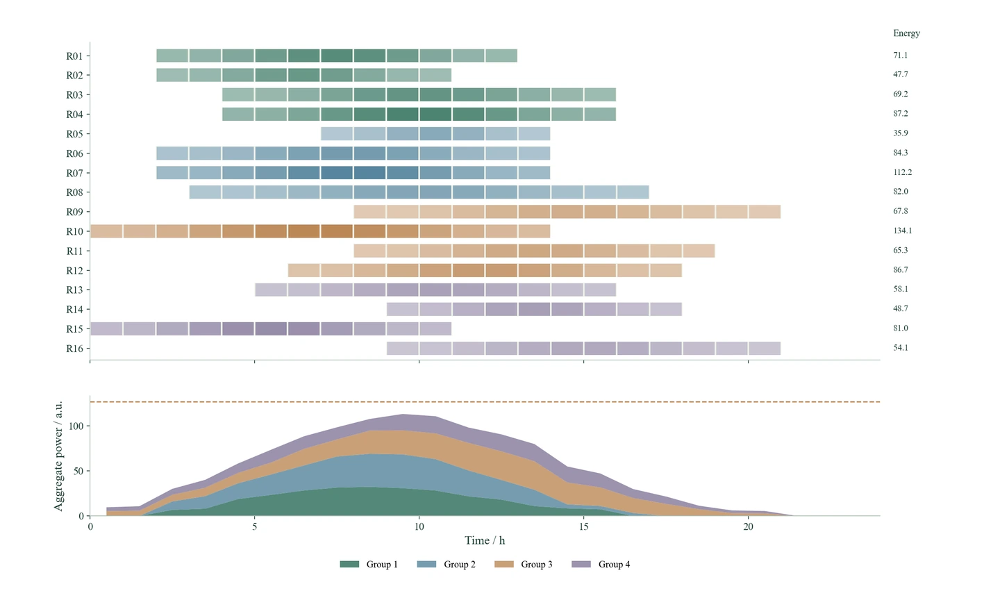

连贯的技术报告
沿研究对象、模型关系和计算结果展开分析，解释工程含义。按模板处理正文、三线表、居中编号公式和参考文献。
Word · MathType · 图表与分析从任务与数据，
到模型、分析与成果。
面向委托研究与工程技术项目的Skill。让研究助手沿着项目要求，推进资料梳理、建模计算、技术报告和模板汇报。

先读材料，明确研究对象和承担范围，再把数据、模型、计算与分析接起来。按当前负责的部分推进，也能继续修订已有成果。
从任务书、合同研究内容和已有材料中找到研究对象、承担范围与交付要求，再把要求拆成相互衔接的技术问题。
任务书、合同内容、已有成果与客户模板
拆解任务，确定研究对象、问题与承担范围
研究问题、工作边界与交付清单
图表服务于研究表达。项目的交付还包括连续的技术分析、符合模板的报告和汇报，以及后续可以复用的计算材料。
阅读完整技能 ↗沿研究对象、模型关系和计算结果展开分析，解释工程含义。按模板处理正文、三线表、居中编号公式和参考文献。
Word · MathType · 图表与分析从整体思路进入模型与算例，组织适合汇报的语言和页面。检查图名、图例、文字容纳和原生对象。
模板PPT · 可编辑对象 · 页面检查把数据处理、模型脚本、参数设置、结果数据和绘图源码整理在一起，便于复算与后续修订。
数据处理 · 模型求解 · 参数与源码将格式、语言、图件、公式与结果分析中的可复用经验留下来，结合反馈和回归检查持续完善。
经验维护 · 修订反馈 · 回归检查可视化是项目研究中的表达工具。这里用独立生成的示意数据展示14类图型，可按问题筛选，并切换MATLAB / EMF与Python / PNG两种模式。
图型演示采用独立生成的示意数据，绘图源码可公开复现。
Python / PNG · 精选6类 / 共14类图型连接各对象的可用窗口、实际分配和分组功率，解释总体变化的来源。
用相连的流带展开多阶段分配，保持各阶段的总量对应。
把密度、观测分布、四分位区间和尾部范围放在同一比较中。
在统一尺度下连接多项指标，呈现不同方案的结构和组内分布。
把连续空间分布与节点连接放在同一坐标系中，观察局部强度与网络结构。
同时呈现约束边界、状态投影路径与位移，说明状态如何进入可行区域。
轨迹与分布包络对应上界，再用同一时间轴展开约束余量。
沿条件展开分布形状，用中位数和四分位距呈现位置与离散程度。
弦带宽度与矩阵权重对应，连接整体网络结构和具体的成对关系。
统一聚类树与矩阵的对象顺序，呈现关系分组、方向与强度。
沿环形时间轴比较周期变化，由内向外对应四种条件。
结合校准区间、各区间样本量和类别概率分布，分析预测表现。
对齐原始信号、时频结构和频带能量，展开频率随时间的变化。
在相同条件下展示配对差异分布、均值和区间，比较条件间的变化。
MATLAB绘制并导出EMF矢量图，Python绘制并导出PNG图像。两条路径分别提供源码与原图。
适合文档排版和放大查看。用原生图元组织曲线、色块、文字、图例和复杂几何关系。
适合插图和在线展示。按明确的画布尺寸与分辨率，输出层次清楚、比例统一的图像。
从任务与资料到数据、建模、计算、分析和交付，演示ProjectX如何组织项目工作。图表用于呈现其中的结果关系。
下载并解压，让本地研究助手读取SKILL.md。
准备任务书、数据和客户模板，说明负责的部分。
按阶段完成建模、计算、分析、报告和汇报。
请使用Senior-ProjectX，先阅读我的项目任务书、已有数据和客户模板，梳理我负责部分的研究对象、模型输入与输出，再完成建模计算、对比分析和结果阐释。图表按问题选择，使用MATLAB导出EMF或Python导出PNG，最后按模板整理技术报告、PPT与计算源码。